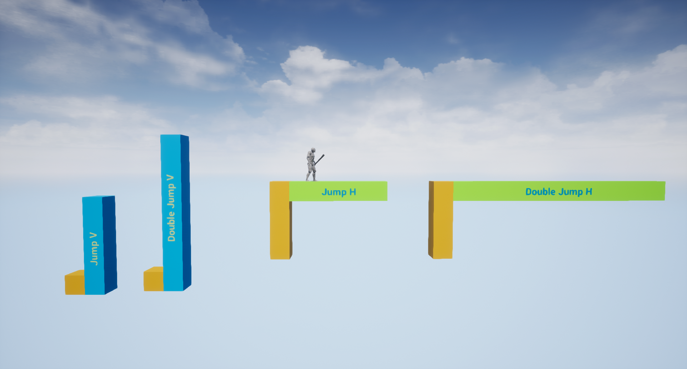

The Underground Castle
A 2.5D platformer level design study. How can I design and iterate simple base challenges to make them "modular" and extend their scope through various different levels?
- Genre: Single Player Platformer
- Engine: Unreal Engine 4
- Language: Unreal Blueprints
- Duration: 3 weeks
- Responsibilities:
Level design: Concept, 2D Layout, Blockout, Iteration process and Scripting.
Art Pass: Final asset placing and lighting work.
Overview and Inspiration
- The aim of this study is to craft an initial level made out of tipical/basic challenges and then iterate it twice, extending and mutating the original challenges in order to get an array of modular game beats that I can rearrange to my liking.
- This is benefitial in two ways: It allows for the player to recognize previous patterns and adapt to the new ones accordingly, and it allows for the designer to create new content much faster that starting from 0 every time a new challenge is required.
- I also want to give each one of the 3 levels different gameplay themes, based on 4 cathegories: Action, Platforming, Speed and Timing. Therefore, each challenge iteration will be based in one or more of this cathegories.


Blockout evolution
- The video above shows every base challenge along with their iterations. The first level basically serves as a tutorial for the player to get used to the player movement and the different types of challenges. The extended level motive was all about taking the base challenges and scaling the difficulty with moving platforms and periodical hazards, while the mutated one shifted towards the idea of making preserving momentum the general theme of the level.
- Aside from this, part of the exercise was to control the pacing and create a good balance between calm and tense moments to keep the player in the flow.

- The player has a generic movement controller, being the only special feature the ability to double jump. Having that in mind, the first thing I did before jumping into the blocking was setting up a gym in which I would test the exact metrics that assure a fair and fun experience.
- Then I would build the levels out of those exact metrics. This method saved precious time during development, as the playtesting focused on how the experience itself felt and there weren't such things as impossible jumps or unreachable platforms.
Art Pass
- Initially the project wasn't going to have an art pass, as it was purely a design exercise. However in the end I decided to add a low poly style to, at least, the first level, because working on the three levels would've gone out of the scope.
- I decided to go for a castle, but the challenges designed are so generic that they could really fit any wanted form. In addition, I gave the level some context by making the main objective to collect the blue flame hidden deep down the castle and bring it so the surface, firing up the torch set at the beginning.
Closing thoughts
- Looking from the study nature of this project, it truly was a interesting experience to build over 30 different challenges only using a limited amount of elements. By mixing and combining them accordingly, you can come up with interesting new concepts while giving them the right amount of difficulty fairly easy.
- The extend-mutate method ended up being really useful. I believe it resulted in fun and engaging challenges and definitely saved loads of time towards designing new challenges. I'm eager to apply it to future projects!